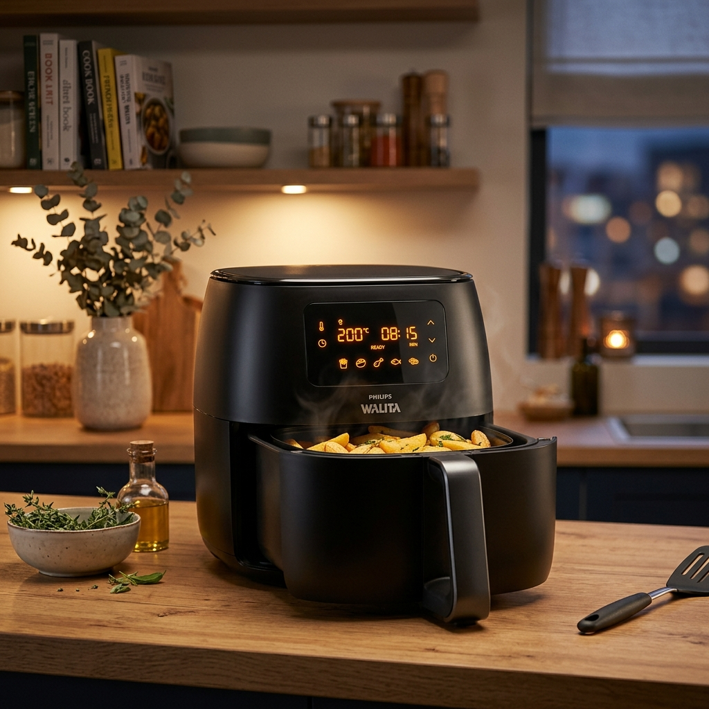

Air Fryer soltando fumaça? O que fazer antes dela queimar para sempre
Ver fumaça saindo da sua Air Fryer pode ser assustador, mas nem sempre significa que ela está estragando. No entanto, é um sinal de alerta que você não deve ignorar para evitar um prejuízo maior (ou até um curto-circuito).
Existem dois tipos principais de fumaça, e saber a diferença entre eles é o que vai salvar o seu bolso.
🌩️ Fumaça Branca vs. Fumaça Preta/Cinza
Fumaça Branca: Geralmente é apenas gordura queimando.
Fumaça Escura/Cheiro de Plástico: Perigo! O motor ou a fiação podem estar derretendo.
1. Fumaça Branca: O excesso de gordura
Se você estiver preparando carnes gordurosas (como linguiça, picanha ou bacon), a gordura respinga na resistência superior que está "vermelha" de quente. Isso gera muita fumaça branca instantaneamente.
Dica de Mestre: Coloque 2 colheres de sopa de água no fundo da cuba (fora da cesta) antes de ligar. Isso ajuda a resfriar a gordura que cai e evita a fumaça.
O teflon da sua Air Fryer está muito sujo?
Cestas velhas acumulam gordura na parte de trás que não sai mais. Às vezes, o risco de incêndio por gordura acumulada faz valer a pena trocar:
2. Fumaça com cheiro de queimado (Motor/Fiação)
Se a fumaça vier acompanhada de um cheiro de borracha ou plástico queimado, **DESLIGUE IMEDIATAMENTE**. Isso acontece quando:
- A hélice do ventilador travou (por sujeira ou defeito).
- A fiação interna derreteu devido ao uso excessivo na temperatura máxima.
- A tomada não está aguentando a potência do aparelho (aquecimento dos pinos).
3. Posso consertar em casa?
Se for fiação derretida, você terá que trocar os cabos internos e isolá-los com material térmico. É um conserto chato e que exige peças originais.

Philips Walita Essential - Segurança em Primeiro Lugar
Considerada a marca mais segura do mercado. Com componentes internos que suportam altas temperaturas por anos sem risco de fumaça.
⚡ VER MELHOR PREÇO AGORAConclusão
Mantenha sua Air Fryer limpa após cada uso para evitar a fumaça branca de gordura. Se o problema for elétrico, avalie se o custo do reparo compensa a paz de espírito de ter um aparelho novo e seguro na sua cozinha.
Gostou? Compartilhe este guia com quem sempre deixa a cozinha esfumaçada!